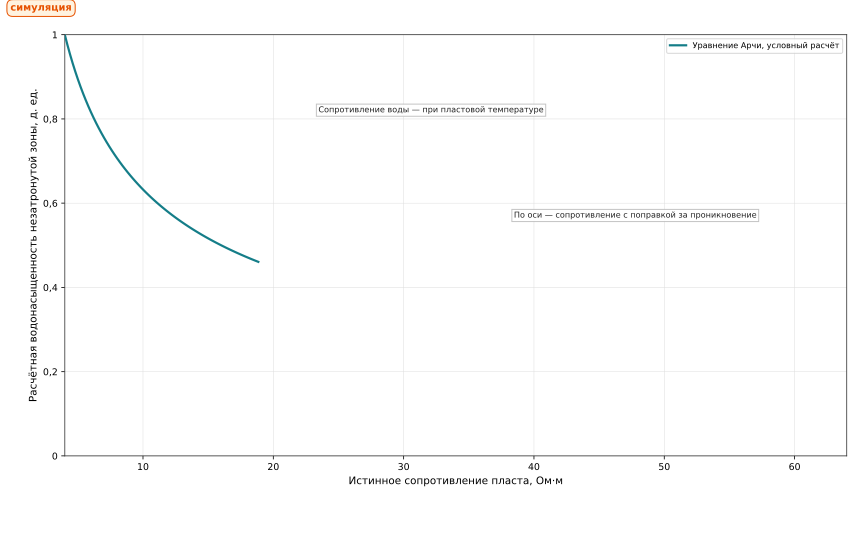
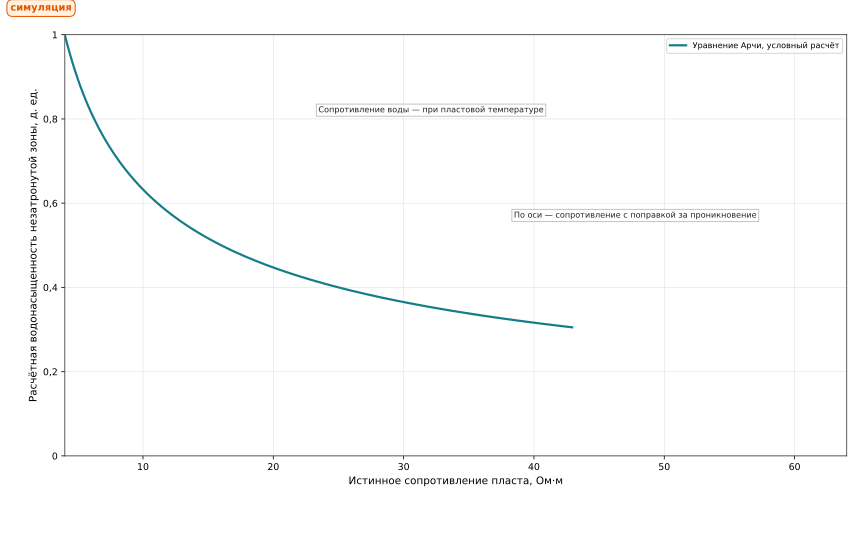
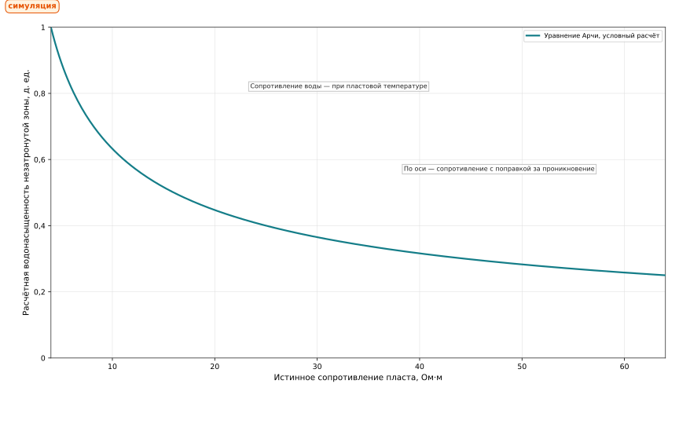
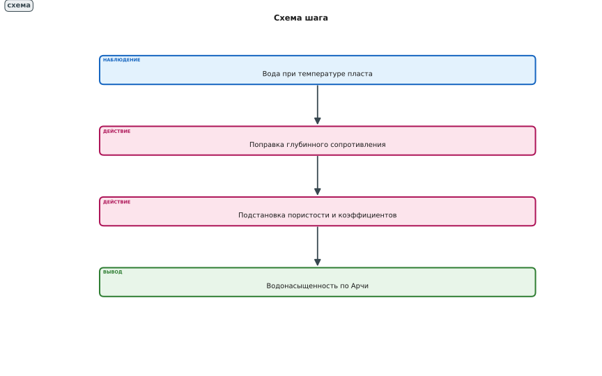

Стр. 126 · ARCHIE WATER SATURATIONS: $S_W$ AND $S_{XO}$
Water saturation ($S_w$) of a reservoir's uninvaded zone is calculated by the Archie (1942) formula:
Log InterpretationШаг 8 из 66
В книге: «ARCHIE WATER SATURATIONS: S_W AND S_XO» стр. 126–127
Опирается на: шаг 1 «От кривых к решению» (предпосылка), шаг 3 «Как выбрать первую кривую» (предпосылка)
Водонасыщенность — доля порового пространства, заполненная водой.
В незатронутой зоне, куда не проник раствор, её рассчитывают по Арчи.
Пороговая идея. Воду не измеряют напрямую: её долю рассчитывают. модель



Показать оси: глубинный отклик сам по себе не является водонасыщенностью, а горизонтальная координата требует поправки.
Допущения: Условные, а не книжные значения: пористость 0,20; сопротивление пластовой воды при пластовой температуре 0,16 Ом·м; a = 1, m = 2, n = 2.; Диапазон истинного сопротивления 4–64 Ом·м выбран для учебной параметрической развёртки при неизменных свойствах..
Уравнение Арчи связывает водонасыщенность с сопротивлениями и пористостью. Отношение сопротивления воды к сопротивлению пласта делят на пористость в степени m и умножают на a. Результат возводят в степень, обратную n. стр. 126
«Water saturation ($S_w$) of a reservoir's uninvaded zone is calculated by the Archie (1942) formula:»
Сопротивление пластовой воды берут при температуре пласта. Истинное сопротивление получают по глубинному индукционному или боковому каротажу. Глубинное сопротивление исправляют за влияние проникновения. стр. 126
«$R_w =$ resistivity of formation water at formation temperature»
«$R_t =$ true formation resistivity (i.e., deep induction or deep laterolog corrected for invasion)»

Коэффициент извилистости a учитывает геометрию пути тока. Показатель цементации m задаёт степень пористости. Их значения автор отсылает искать в таблице. Показатель насыщения n задаёт итоговую степень в формуле. стр. 126–127
«$a =$ tortuosity factor (Table 1.1; Chapter 1)»
«$m =$ cementation exponent (Table 1.1; Chapter 1)»
Уравнение Арчи для незатронутой зоны стр. 126
| Обозначение | Что это | Единицы |
|---|---|---|
| $S_w$ | водонасыщенность незатронутой зоны | — |
| $R_w$ | сопротивление пластовой воды при пластовой температуре | — |
| $R_t$ | истинное сопротивление пласта | — |
| $\phi$ | пористость | — |
| $a$ | коэффициент извилистости | — |
| $m$ | показатель цементации | — |
| $n$ | показатель насыщения | — |
Пористость, сопротивления, параметры Арчи → Водонасыщенность незатронутой зоны.
Оценить скрытый параметр по нескольким измеренным признакам.
Где аналогия перестаёт работать: Коэффициенты модели задают связь измерения и свойства, а не просто масштаб поля.
Верный ответ: Исправить за влияние проникновения
Арчи использует истинное, а не неизменённое показание прибора. Где это в тексте (стр. 126) →
При какой температуре берут сопротивление воды?
Сопротивление пластовой воды берут при .
Верный ответ: Сопротивление пластовой воды берут при [температуре пласта].
Сопротивление воды относится к условиям пласта. Где это в тексте (стр. 126) →
Все утверждения шага с дословной цитатой автора и страницей книги (по PDF).
Водонасыщенность незатронутой зоны рассчитывают формулой Арчи. наблюдение
«Water saturation ($S_w$) of a reservoir's uninvaded zone is calculated by the Archie (1942) formula:»
Сопротивление пластовой воды относится к пластовой температуре. наблюдение
«$R_w =$ resistivity of formation water at formation temperature»
Истинное сопротивление пласта получают по глубинному индукционному или глубинному боковому каротажу с поправкой на проникновение. наблюдение
«$R_t =$ true formation resistivity (i.e., deep induction or deep laterolog corrected for invasion)»
Коэффициент извилистости берут из указанной в книге таблицы. наблюдение
«$a =$ tortuosity factor (Table 1.1; Chapter 1)»
Показатель цементации берут из указанной в книге таблицы. наблюдение
«$m =$ cementation exponent (Table 1.1; Chapter 1)»
Стр. 126 · ARCHIE WATER SATURATIONS: $S_W$ AND $S_{XO}$
Water saturation ($S_w$) of a reservoir's uninvaded zone is calculated by the Archie (1942) formula:
Стр. 126 · ARCHIE WATER SATURATIONS: $S_W$ AND $S_{XO}$
$$ S_w = \left( \frac{a \times R_w}{R_t \times \phi^m} \right)^{\frac{1}{n}} \tag{7.1} $$
Стр. 126 · ARCHIE WATER SATURATIONS: $S_W$ AND $S_{XO}$
where:
Стр. 126 · ARCHIE WATER SATURATIONS: $S_W$ AND $S_{XO}$
$S_w =$ water saturation of the uninvaded zone
Стр. 126 · ARCHIE WATER SATURATIONS: $S_W$ AND $S_{XO}$
$R_w =$ resistivity of formation water at formation temperature
Стр. 126 · ARCHIE WATER SATURATIONS: $S_W$ AND $S_{XO}$
$R_t =$ true formation resistivity (i.e., deep induction or deep laterolog corrected for invasion)
Стр. 126 · ARCHIE WATER SATURATIONS: $S_W$ AND $S_{XO}$
$\phi =$ porosity
Стр. 126 · ARCHIE WATER SATURATIONS: $S_W$ AND $S_{XO}$
$a =$ tortuosity factor (Table 1.1; Chapter 1)
Стр. 127 · ARCHIE WATER SATURATIONS: $S_W$ AND $S_{XO}$
$m =$ cementation exponent (Table 1.1; Chapter 1)
Стр. 127 · ARCHIE WATER SATURATIONS: $S_W$ AND $S_{XO}$
$n =$ saturation exponent
На этот шаг опираются: шаг 9 «Вода не равна продуктивности», шаг 10 «Как оценить воду у ствола», шаг 12 «Как обойтись без кривой пористости», шаг 15 «Что значит совпадение двух оценок», шаг 21 «Почему минимум служит ориентиром», шаг 25 «Как получить пористость по сопротивлению», шаг 26 «Что выдаёт пористость по сопротивлению», шаг 29 «Почему вода может не двигаться», шаг 33 «Зачем нужны диаграммы насыщения», шаг 34 «Как уравнение превращается в прямую», шаг 64 «Почему сланец и глина различаются».
Как оценить воду вдали от ствола
Ссылки в ответе ведут к исходному тексту.